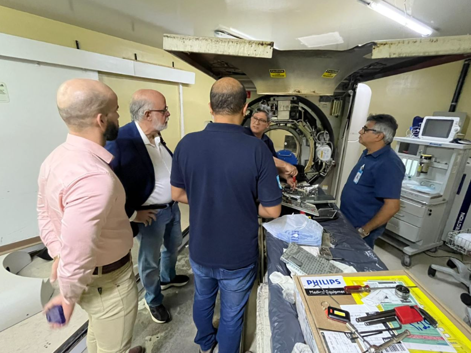
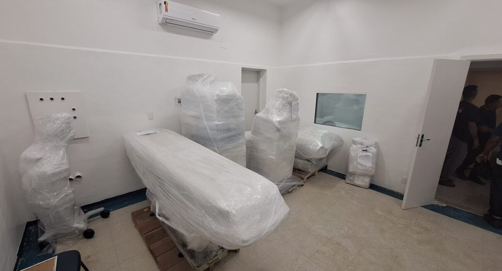
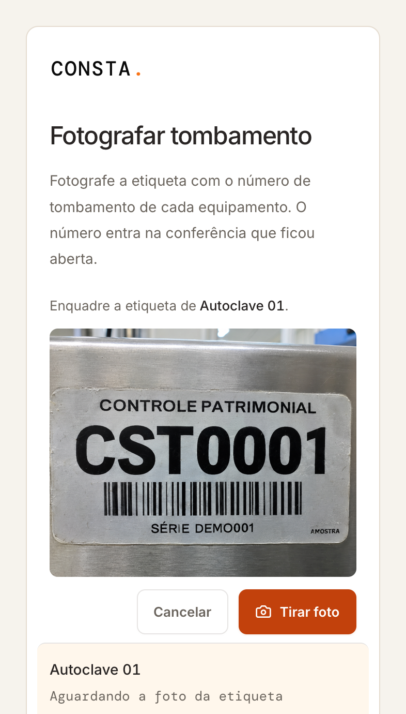
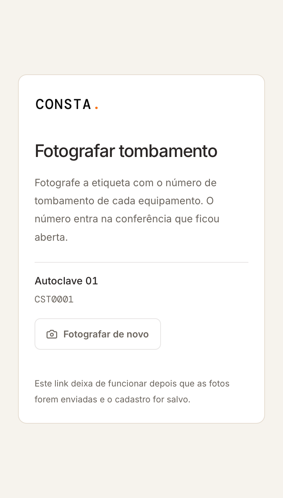
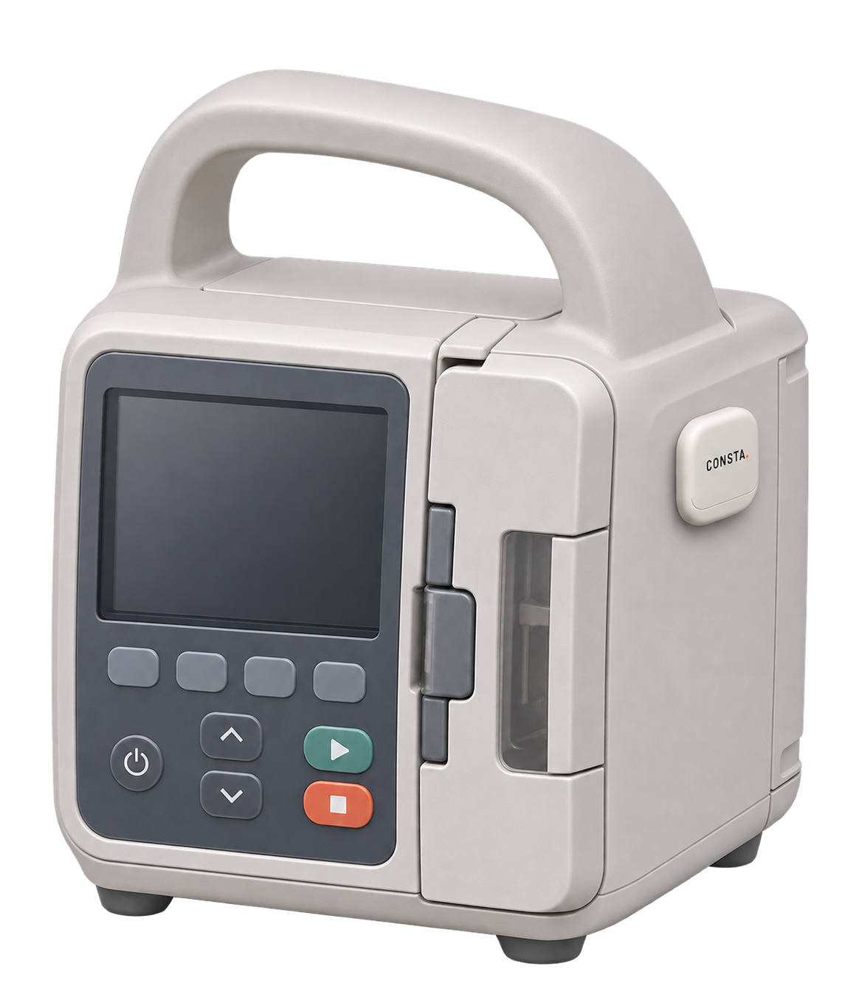
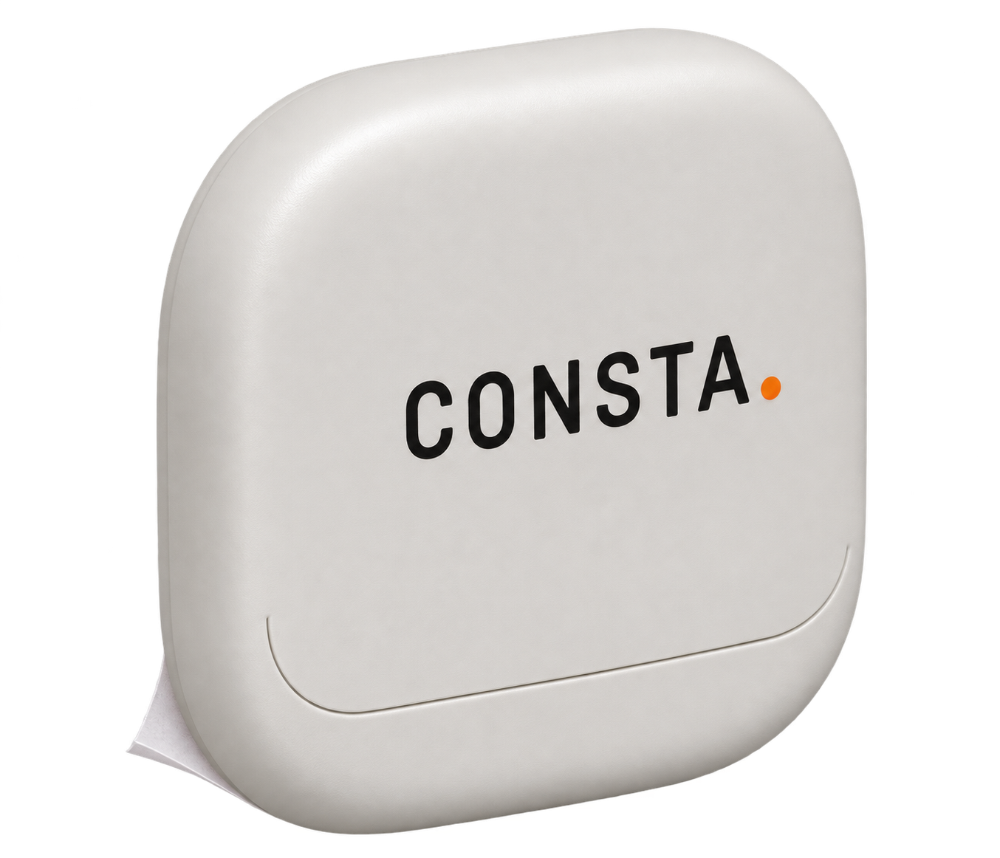
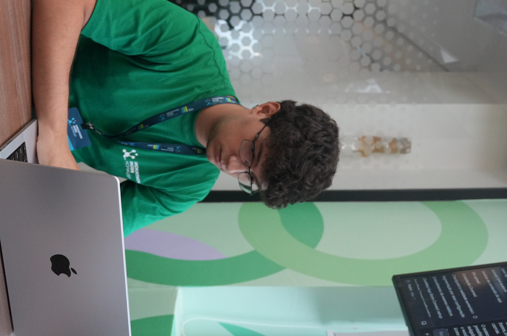
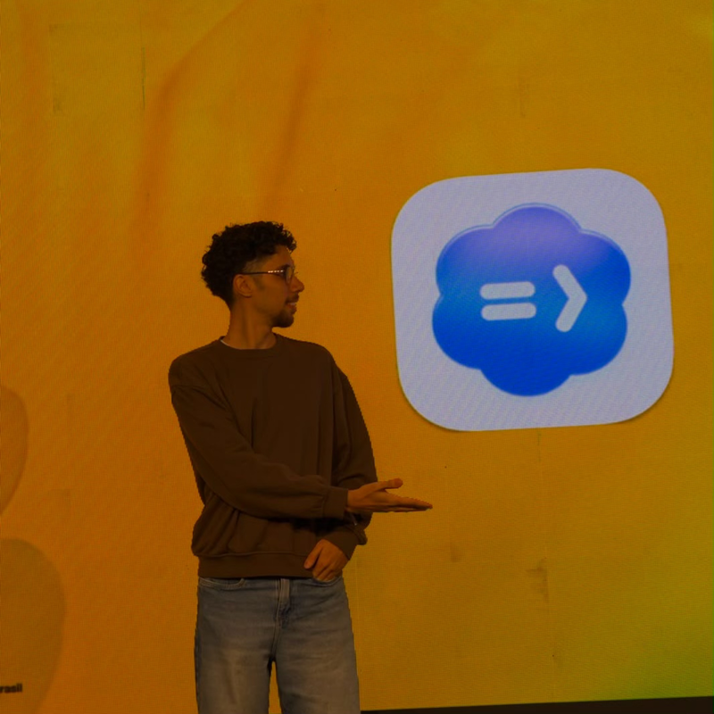
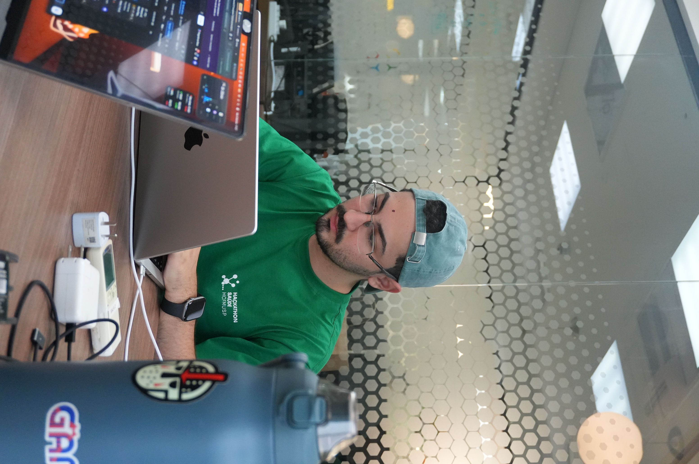
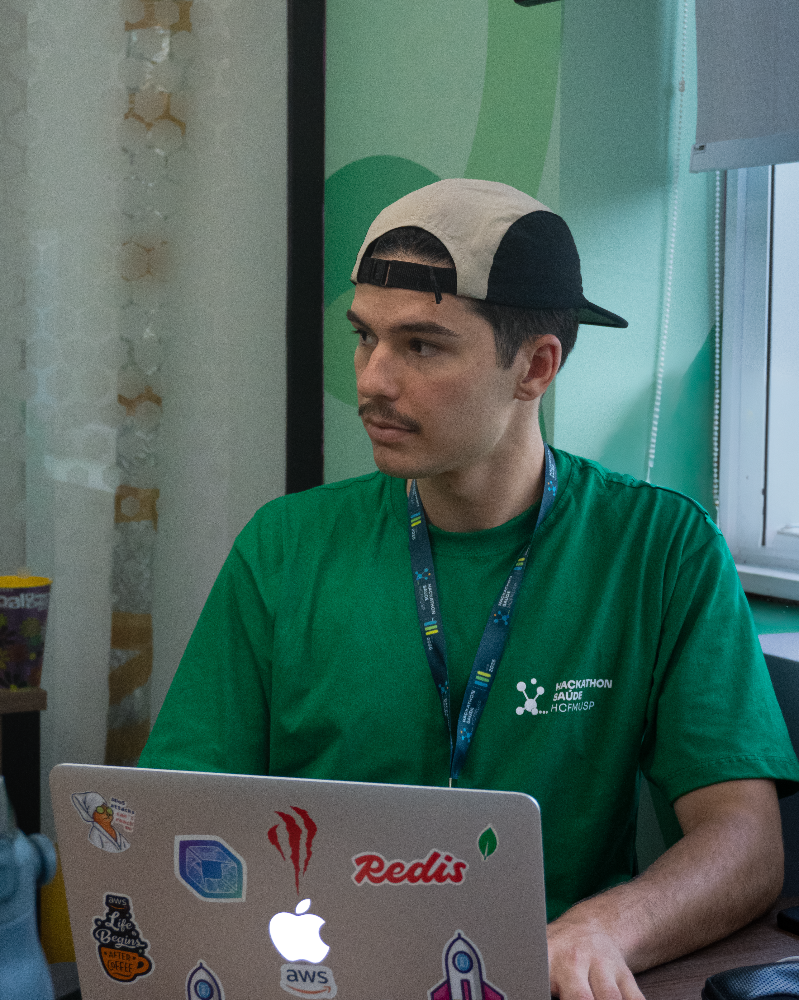

Até 100 equipamentos
R$ 6 mil/ano
Equivalente a R$500/mês
Gestão de ativos e manutenção preventiva hospitalar.
Documentos, equipamentos e prazos em um só lugar.
Avance para começar →

IMPRENSA BRASILEIRA · EPISÓDIOS DATADOS · 2025–2026
NATAL / RN · HOSPITAL WALFREDO GURGEL
Falhas levaram a encaminhamentos
e a aluguel emergencial de tomógrafo.
FLORIANÓPOLIS / SC · HOSPITAL CELSO RAMOS
Exames em outro hospital.

ARARAS / SP · SANTA CASA
Exames fora. Na UPA,
tomógrafo sem uso.
EXAMES FORA · ENCAMINHAMENTOS · DESPESA EMERGENCIALEpisódios datados; respostas e desfechos nas fontes. Não são custos evitados pelo Consta. Dossiê ↗
DOR
R$75 mil/mês
EQUIVALÊNCIA DO ALUGUEL · MÊS DE 30 DIAS
R$ 75.000 ÷ 30 = R$ 2.500/dia
Conta sobre o aluguel anunciado. Não é o custo real da parada nem economia do Consta.
no aluguel emergencial anunciado
de um tomógrafo, depois de falhas.
Hospital Walfredo Gurgel · Natal/RN · falhas em 2025, histórico retomado pela Agora RN em 19 jun 2026 ↗
DOR
Ativo, contrato e manutenção para resolver.
Casos distintos. Cirurgias: JB Litoral · 21 dez 2025 ↗ · Demais casos e contexto ↗
DOR
Ele precisa encontrar o ativo, conferir o contrato
e colocar a manutenção em dia.
SOLUÇÃO
CONSTA
O contrato vira inventário.
O mapa mostra onde procurar.
DEMONSTRAÇÃO
Cenário sintético · interface real
Envie o arquivo do contrato.
SOLUÇÃO · AGENDA
RELAÇÃO DE EQUIPAMENTOS · EQ-01 A EQ-20
Capacidade considerada no exemplo: 4 serviços por dia. Sem ultrapassar o prazo.
Janela autorizada no exemplo: 01–05/02/2027. Confirmar janela e capacidade com a Engenharia Clínica.
DEMONSTRAÇÃO · CAPTURA
Da etiqueta à conferência.
A decisão continua com você.
Demonstração simulada
Etiqueta sintética · leitura simulada


Patrimônio recebido.
Confira antes de salvar.
SOLUÇÃO · BLE

Imagem em preparação
assets/tag/consta-tag-adesiva-na-bomba-conceito.png

Conceito em preparação
DEMONSTRAÇÃO · LOCALIZAÇÃO
Conceito de navegação · integração BLE e implantação hospitalar ainda a validar.
SOLUÇÃO · AUTOMAÇÃO
PDF ou TXT
O CAMINHO MANUAL
Equipamentos · série · tombamento
Modelo · regras do documento
Dados preenchidos.
Confirme o cadastro.
Plano revisado
gera previsões.
Documento completo. Cadastro preparado. Confirme e comece a gerir.
IMPACTO · ATENDIMENTO
ESCALA REAL · OUTRO HOSPITAL
Até 2 mil/mêsReferência de outro hospital; não ganho do Consta.
Casos distintos · impacto do Consta a medir no piloto.
IMPACTO · ECONOMIA POTENCIAL
≈ R$500mil/ano
se uma locação adicional for dispensada por 12 meses
Referência: R$41.190,95/mês · um tomógrafo
TIME




CONSTA
Gestão de ativos e
manutenção hospitalar.Próximo passo: piloto em equipamentos
e áreas aprovados pelo hospital.
PRÓXIMO PASSO
Conheça o Consta.
Vamos validar com a Engenharia Clínica?
consta.vercel.app ↗MODELO DE NEGÓCIO · PROPOSTA
R$ 6 mil/ano
R$ 12 mil/ano
R$ 24 mil/ano
CRM por unidade hospitalar. Tags BLE, receptores e implantação à parte.
Detalhes das cinco frentes · mecanismo proposto, evidência externa e métrica do piloto
FLUXO PROPOSTO NO CONSTA
90/90
medições com o setor correto
Os mesmos 30 beacons em três setores. Acerto de sala foi limitado.
Não mediu tempo de busca ou desempenho do Consta.
VALIDAR NO PILOTOAcerto por setor e tempo para encontrar o ativo
FLUXO PROPOSTO NO CONSTA
A garantia começa na instalação.
O marco precisa estar comprovado antes de calcular o prazo.
Fonte de obrigações para extrair; não é ensaio da IA do Consta.
VALIDAR NO PILOTOTempo de cadastro com revisão e erros por campo
FLUXO PROPOSTO NO CONSTA
Endoscópios disponíveis no HC-UFG
Início de 202513Final de 202534
Resultado de equipe e processos; não efeito isolado de software.
VALIDAR NO PILOTOTarefas concluídas no prazo e horas indisponíveis
FLUXO PROPOSTO NO CONSTA
4.128
ordens de serviço atendidas
Engenharia Clínica do HC-UFG, em 2025. Localizado ≠ liberado para uso.
Quantidade de serviços atendidos; não ganho ou economia.
VALIDAR NO PILOTOTempo até resolução e pendências em aberto
FLUXO PROPOSTO NO CONSTA
Anexo12 mesesContrato24 meses
O mesmo conjunto tem divergência.
A fonte e a regra de prevalência precisam aparecer para revisão.
Exige revisão de cobertura; não demonstra economia.
VALIDAR NO PILOTOAcertos de cobertura e despesas conferidas por documento
Equivalência do aluguel do caso de Natal · R$ 75.000 ÷ 30 dias = R$ 2.500/dia · ÷ 720 horas = R$ 104,17 por hora de calendário. Conta sobre a locação anunciada (Agora RN, 19 jun 2026, histórico de 2025 ↗); não é custo real da parada nem economia do Consta.